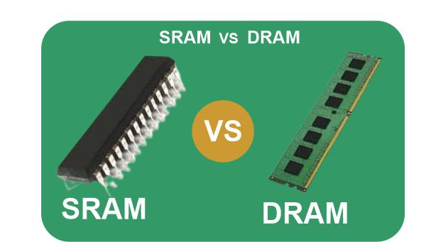

TABLE OF CONTENT

- What is the Computer Memory
- Classification Of Computer Memory
- Internal/Primary/Main Memory
- ROM
- RAM
- What is SRAM
- Advantages of SRAM
- Disadvantages of SRAM
- What is DRAM
- Advantages of DRAM
- Disadvantages of DRAM
- Difference between SRAM and DRAM
- External/Secondary Memory
- Cache Memory
- What is Memory Representation of the computer ?
What is the Computer Memory
Memory is the electronic holding place for the instructions and data a computer needs to reach quickly. It's where information is stored for immediate use. Memory is one of the basic functions of a computer, because without it, a computer would not be able to function properly.
Memory is just like the human brain. It is used to store data/information and instructions. It is a data storage unit or a data storage device where data is to be processed and instructions required for processing are stored. It can store both the input and output can be stored here.
Classification Of Computer Memory
There are technically two types of computer memory:primary and secondary.
The term memory is used as a synonym for primary memory or as an abbreviation for a specific type of primary memory called random access memory (RAM).Whenever a program executes inside a computer then at first the program has to be loaded on to the computer’s primary memory. And also when a does not execute then also the program must remain loaded in computers secondary memory. This memory unit works as an extra block. In a program in memory, the entire set of performed operations is written using the keyboard as a sequence of instructions. This collection of instruction is called a program. Also, the data on which the program is to operate is entered with the help of the keyboard and can be stored in memory. Memory can also store intermediate and final results.
This design of a stored program computer where program, data, and result reside in-memory is because of Von Neumann.
Characteristics of Computer Memory
- It is faster computer memory as compared to secondary memory.
- It is semiconductor memories.
- It is usually a volatile memory, and main memory of the computer.
- A computer system cannot run without primary memory.
How Does Computer Memory Work?
When you open a program, it is loaded from secondary memory into primary memory. Because there are various types of memory and storage, an example would be moving a program from a solid-state drive (SSD) to RAM. Because primary storage is accessed more quickly, the opened software can connect with the computer’s processor more quickly. The primary memory is readily accessible from temporary memory slots or other storage sites.
Internal/Primary/Main Memory
Main memory (sometimes called primary storage) refers to storage locations that are directly accessible by the processor. Main memory offers very fast read/write speeds but is typically much lower capacity than secondary storage devices. All stages. Random access memory (RAM)
It is also known as the main memory of the computer system. It is used to store data and programs or instructions during computer operations. It uses semiconductor technology and hence is commonly called semiconductor memory.
Primary memory is of two types:
The central processing unit is one of the most important components in the computer. It is where various tasks are performed and an output is generated. When the microprocessor completes the execution of a set of instructions, and is ready to carry out the next task, it retrieves the information it needs from RAM. Typically, the directions include the address where the information, which needs to be read, is located. The CPU transmits the address to the RAM's controller, which goes through the process of locating the address and reading the data.
READ ONLY MEMORY
It is a non-volatile memory. Non-volatile memory stores information even when there is a power supply failed/ interrupted/stopped. ROM is used to store information that is used to operate the system. As its name refers to read-only memory, we can only read the programs and data that is stored on it. It contains some electronic fuses that can be programmed for a piece of specific information. The information stored in the ROM in binary format. It is also known as permanent memory.
ROM is of four types:
- MROM(Masked ROM) :Hard-wired devices with a pre-programmed collection of data or instructions were the first ROMs. Masked ROMs are a type of low-cost ROM that works in this way.
- PROM (Programmable Read Only Memory) :This read-only memory is modifiable once by the user. The user purchases a blank PROM and uses a PROM program to put the required contents into the PROM. Its content can’t be erased once written.
- EPROM (Erasable Programmable Read Only Memory): EPROM is an extension to PROM where you can erase the content of ROM by exposing it to Ultraviolet rays for nearly 40 minutes.
- EEPROM (Electrically Erasable Programmable Read Only Memory) :Here the written contents can be erased electrically. You can delete and reprogramme EEPROM up to 10,000 times. Erasing and programming take very little time, i.e., nearly 4 -10 ms(milliseconds). Any area in an EEPROM can be wiped and programmed selectively.
READ ACCEESS MEMORY
(1.)
It is a volatile memory.
(2.)
Volatile memory stores information based on the power supply.

(3.)
If the power supply fails/ interrupted/stopped, all the data and information on this memory will be lost.
(4.)
RAM is used for booting up or start the computer.
(5.)
It temporarily stores programs/data which has to be executed by the processor.
SRAM
SRAM is a type of semiconductor memory that uses Bistable latching circuitry to store each
bit. In this type of RAM, data is stored using the six transistor memory cell. Static RAM is
mostly used as a cache memory for the processor (CPU).
SRAM is relatively faster than other RAM types, such as DRAM. It also consumes less
power. The full form of SRAM is Static Random Access Memory.
Advantage of SRAM
- SRAM performance is better than DRAM in terms of speed. It means it is faster in operations
- SRAM used to create a speed-sensitive cache.
- It has medium power consumption.
Disadvantage of SRAM
- It is comparatively slower than SRAM, so it takes more time for accessing data or information
- You will losses data when power is OFF
- It has higher power consumption compared to SRAM.

DRAM
It is a type of RAM which allows you to stores each bit of data in a separate capacitor within
a particular integrated circuit.
It is a standard computer memory of any modern desktop computer. The full form of DRAM
is Dynamic Random Access Memory.
DRAM is constructed using capacitors and a few transistors. this type of RAM, the
capacitor is used for storing the data where bit value, which signifies that the capacitor is
charged and a bit value 0, which means that the capacitor is discharged.
Advantage of DRAM
- Cheaper compared to SRAM.
- It has a higher storage capacity. Hence it is used to create a larger RAM space system.
- Offers simple structure
- It doesn't require to refresh the memory contents
- You don't need to refresh the memory contents and its access time is faster
- logic or circuitry is needed, so the memory module itself is simpler
Advantage of DRAM
- It is costlier compared to DRAM
- It is volatile, so you will lose the data when memory is not powered.
- DRAM does not offer to refresh programs
- It has a low storage capacity.
- SRAM offers a more complex design.
- Reduces the memory density
Difference of SRAM and DRAM

SRAM VS DRAM
Difference between SRAM and DRAM
| SRAM |
DRAM |
SRAM has lower access time, which is faster
compared to DRAM. |
DRAM has a higher access time. It is slower than
SRAM. |
| SRAM is costlier than DRAM. |
DRAM cost is lesser compared to SRAM. |
| SRAM offers low packaging density. |
DRAM offers a high packaging density. |
| Uses transistors and latches. |
Uses capacitors and very few transistors.
|
| SRAM is of a smaller size |
DRAM is available in larger storage capacity. |
| SRAM is in the form of on-chip memory. |
DRAM has the characteristics of off-chip memory. |
| The storage capacity of SRAM is 1MB to 16MB |
The storage capacity of DRAM is 1 GB to 16GB |
External/Secondary Memory


External/Secondary Memory
It is also known as auxiliary memory and backup memory. It is a non-volatile memory and used to store a large amount of data or information. The data or information stored in secondary memory is permanent, and it is slower than primary memory. A CPU cannot access secondary memory directly. The data/information from the auxiliary memory is first transferred to the main memory, and then the CPU can access it.
Characteristics of Secondary Memory
- It is a slow memory but reusable.
- It is a reliable and non-volatile memory.
- It is cheaper than primary memory.
- The storage capacity of secondary memory is large.
- A computer system can run without secondary memory.
Types of Secondary Memory
1.Magnetic Tapes
Magnetic tape is a long, narrow strip of plastic film with a thin, magnetic coating on it that is used for magnetic recording. Bits are recorded on tape as magnetic patches called RECORDS that run along many tracks. Typically, 7 or 9 bits are recorded concurrently. Each track has one read/write head, which allows data to be recorded and read as a sequence of characters. It can be stopped, started moving forward or backward, or rewound.
2.Magnetic Disks
A magnetic disk is a circular metal or a plastic plate and these plates are coated with magnetic material. The disc is used on both sides. Bits are stored in magnetized surfaces in locations called tracks that run in concentric rings. Sectors are typically used to break tracks into pieces.
3.Optical Disks
It’s a laser-based storage medium that can be written to and read. It is reasonably priced and has a long lifespan. The optical disc can be taken out of the computer by occasional users.
Cache Memory
It is a type of high-speed semiconductor memory that can help the CPU run faster. Between the CPU and the main memory, it serves as a buffer. It is used to store the data and programs that the CPU uses the most frequently.
Advantages of Cache Memory
- It is faster than the main memory.
- When compared to the main memory, it takes less time to access it.
- It keeps the programs that can be run in a short amount of time.
- It stores data in temporary use.
Disadvantages of Cache Memory
- Because of the semiconductors used, it is very expensive.
- The size of the cache (amount of data it can store) is usually small.

![]()
What is Memory Representation in computer?
A piece of computer memory can be represented by a series of 0's and 1's, with one digit for each bit of memory; the value 1 represents an “on” bit and a 0 represents an “off” bit.
The computer memory stores different kinds of data like input data, output data, intermediate results, etc., and the instructions. Binary digit or bit is the basic unit of memory.
A bit is a single binary digit, i.e., 0 or 1. A bit is the smallest unit of representation of data in a computer. However, the data is handled by the computer as a combination of bits. A group of 8 bits form a byte. One byte is the smallest unit of data that is handled by the computer. One byte can store 28, i.e., 256 different combinations of bits, and thus can be used to represent 256 different symbols. In a byte, the different combinations of bits fall in the range 00000000 to 11111111. A group of bytes can be further combined to form a word. A word can be a group of 2, 4 or 8 bytes.
- 1 bit = 0 or 1
- 1 Byte (B) = 8 bits
- 1 Kilobyte (KB) = 210 = 1024 bytes
- 1 Megabyte (MB) = 220 = 1024KB
- 1 Gigabyte (GB) = 230 = 1024 MB = 1024 *1024 KB
- 1 Terabyte (TB) = 240 = 1024 GB = 1024 * 1024 *1024 KB
Memory is logically organized as a linear array of locations. For a processor, the range of the memory addresses is 0 to the maximum size of memory. Figure shows the organization of a 16 MB block of memory for a processor with a 32-bit word.
Memory allocation for Fundamental data types.
| Data type |
Space in memory |
Range of value |
| char |
1 bytes |
8 bits |
-127 to 128 |
| int |
2 bytes |
16 bits |
.-32,768to 32,767 |
| float |
4 bytes |
32 bits |
3.4*10-38 to 3.4*1038-1 |
| double |
8 bytes |
64 bits |
1.7*10-308 to 1.7+10308-1 |